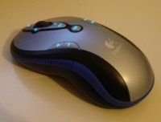

Logitech Media Play
Archivierte Anleitung
Dieser Artikel wurde archiviert, da er - oder Teile daraus - nur noch unter einer älteren Ubuntu-Version nutzbar ist. Diese Anleitung wird vom Wiki-Team weder auf Richtigkeit überprüft noch anderweitig gepflegt. Zusätzlich wurde der Artikel für weitere Änderungen gesperrt.
Dieser Artikel wurde für die folgenden Ubuntu-Versionen getestet:
Zum Verständnis dieses Artikels sind folgende Seiten hilfreich:

Dieser Wiki-Artikel soll eine Hilfestellung zur Inbetriebnahme der Bluetooth-Maus "Logitech Media Play" inklusive aller Zusatztasten darstellen.
Ab Ubuntu 7.04¶
Da der Treiber bereits im Kernel integriert ist, ist es ab dieser Ubuntu-Version nur notwendig, sicherzustellen, dass keine anderen USB-Module dem Maustreiber die Funktion wegnehmen. Dazu muss mit einem Editor mit Root-Rechten die Datei /etc/init.d/bootmisc.sh, die Befehle enthält, die nach dem Booten ausgeführt werden, geöffnet [4] werden und zu dieser relativ weit unten gelegenen Stelle gegangen werden:
} case "$1" in
Vor diese Stelle trägt man nun diese Zeilen ein:
rmmod -f hid rmmod -f usbhid modprobe -r lmpcm_usb modprobe lmpcm_usb modprobe hid modprobe usbhid
Das hat zur Folge, dass eventuell vorher geladene USB-Module entladen werden, der Maustreiber geladen wird und daraufhin die USB-Module wieder geladen werden.
Danach kann mit der Konfiguration weitergemacht werden.
Bis Ubuntu 6.10¶
Voraussetzungen¶
Module¶
Im Terminal [3] muss zunächst überprüft werden, ob wichtige USB-Module geladen sind:
lsmod | grep uhci lsmod | grep usb
Erhält man keine Ausgabe, so müssen die Module nachgeladen werden:
sudo modprobe uhci sudo modprobe usbcore
Pakete¶
Weiteres Kriterium zur Installation der Maus-Treiber sind die sog. Kernel-Header für den im Betrieb befindlichen Kernel. Dafür installiert [2] man das Paket
linux-headers-386 [7]
Damit sind alle Voraussetzungen erfüllt und es kann im nächsten Schritt mit der Installation und Einrichtung des Treibers weitergehen.
Installation/Einrichtung¶
Die Seite vom Autor  des Treibers bietet auch gleich das geschnürte Paket, dessen aktuelle Version hier im Wiki bereitgestellt ist: Downloadlink Maustreiber
des Treibers bietet auch gleich das geschnürte Paket, dessen aktuelle Version hier im Wiki bereitgestellt ist: Downloadlink Maustreiber
Nach dem Entpacken des Pakets [6] kompiliert man den Quelltext [5], überspringt jedoch im Dreisatz der Anleitung den Schritt "Konfigurieren" (also den Befehl ./configure). Nach der Kompilierung kann der Treiber geladen werden [1]:
sudo modprobe lmpcm_usb
Ob das Laden des Moduls korrekt vonstatten ging, erfährt man, wenn der Befehl
dmesg | grep MediaPlay
eine Ausgabe zur Folge hat.
Damit dieser Treiber nun gleich beim Systemstart geladen wird, muss noch die Datei /etc/modules in einem Editor mit Rootrechten [4] editiert werden. Hier fügt man vor "usbmouse" (falls vorhanden) dies ein:
lmpcm_usb # Logitech MediaPlay
Sollten die Module "uhci" und/oder "usb" noch nicht darin auftauchen, müssen diese ebenfalls jeweils in einer eigenen Zeile eingefügt werden, so dass das Endergebnis dann so aussehen sollte:
uhci usb lmpcm_usb # Logitech MediaPlay usbmouse
Es ist möglich, dass jetzt ein Neustart von Nöten ist, damit die Grundfunktionen der Maus laufen.
Konfiguration¶
Empfehlenswert ist wahrscheinlich nun zuerst, die Mausgeschwindigkeit herabzusetzen. Dies geschieht in GNOME über: "System - > Einstellungen - > Maus".
Wahrscheinlich geht in Bezug auf die Sondertasten noch nicht alles so, wie es sollte. Darum muss noch die X-Konfiguration angepasst werden. Zuerst macht man am besten eine Sicherheitskopie [3]:
sudo cp /etc/X11/xorg.conf /etc/X11/xorg.bak
Jetzt löscht man die Sektion "InputDevice", in der die Maus auftaucht und ersetzt sie durch den unten stehenden Text:
Section "InputDevice" Identifier "Configured Mouse" Driver "mouse" Option "Protocol" "ExplorerPS/2" Option "Device" "/dev/input/mice" Option "ZAxisMapping" "6 7" Option "Buttons" "7" EndSection
Wichtig: Ab Ubuntu 7.10 Gutsy Gibbon muss der Punkt "ZAxisMapping" wie folgt aussehen, sonst funktioniert das Mausrad nicht:
Option "ZAxisMapping" "8 9"
Hinweis:
Hatte der "Identifier" vorher eine andere Bezeichnung, muss in der Sektion "Serverlayout" der Namen noch zusätzlich anpasst werden.
Jetzt noch die Datei ~/.Xmodmap [4] mit folgendem Inhalt erstellen:
keycode 234 = XF86Back keycode 233 = XF86Forward keycode 174 = XF86AudioLowerVolume keycode 176 = XF86AudioRaiseVolume keycode 162 = XF86AudioPlay keycode 144 = XF86AudioPrev keycode 153 = XF86AudioNext keycode 168 = XF86AudioMedia pointer = 1 2 3 8 9 4 5 6 7 10 11
Der letzte Befehl im Terminal [3] übernimmt die Änderungen der Tastenzuweisungen, indem das Programm xmodmap die Konfigurationsdatei .Xmodmap einliest:
xmodmap $HOME/.Xmodmap
Natürlich können die Sondertasten auch mit anderen Funktionen belegt werden, unter GNOME geschieht dies über "System - > Einstellungen - > Tastenkombinationen".
Experten-Info:
Um andere Funktionen als die vordefinierten der laufenden Desktopumgebung (GNOME, KDE usw.) verwenden zu können, kann die Datei ~/.Xmodmap um zusätzliche Einträge erweitert/verändert werden. Zum Beispiel möchte man auf der Play-Taste der Maus die gleiche Funktion haben, wie ein Druck der Taste Entf bewirkt. Dazu ändert man die Zeile keycode 162 = XF86AudioPlay in keycode 162 = Delete. Weitere Informationen zum speziellen Anpassen der Tasten gibt der Befehl man xmodmap.
Hinweise¶
Es kann vorkommen, dass bei einem Update die Kernel-Header aktualisiert werden und damit der Treiber nicht mehr geladen werden kann, da die Kernelheader-Version nicht mit dem kompilierten Treiber übereinstimmt. Um das zu beheben, muss nur der zweite Absatz von "Installation/Einrichtung" wiederholt werden, also die Kompilierung des Moduls und das Laden. Eventuell ist danach wieder ein Neustart nötig.

- Erstellt mit Inyoka
-
 2004 – 2017 ubuntuusers.de • Einige Rechte vorbehalten
2004 – 2017 ubuntuusers.de • Einige Rechte vorbehalten
Lizenz • Kontakt • Datenschutz • Impressum • Serverstatus -
Serverhousing gespendet von